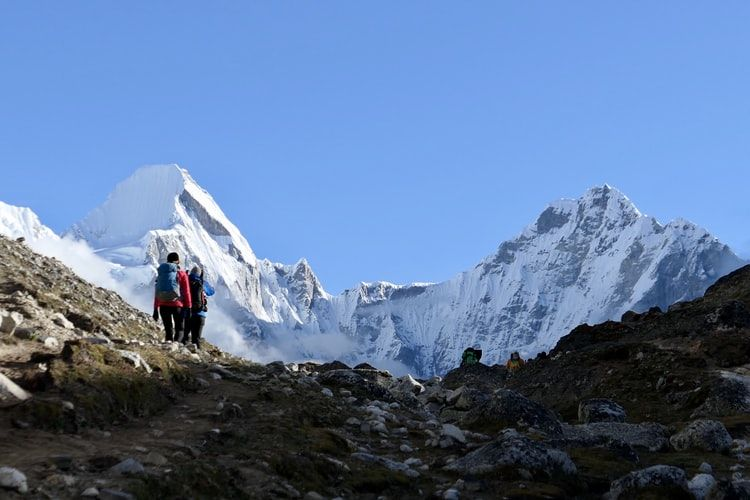
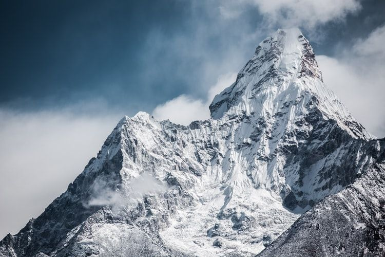

Mount Everest is Earth's highest mountain above sea level, located in the Mahalangur Himal sub-range of the Himalayas. The international border between Nepal and China runs across its summit point. The current official elevation of 8,848 m (29,029 ft), recognised by China and Nepal, was established by a 1955 Indian survey and subsequently confirmed by a Chinese survey in 1975.
In 1865, Everest was given its official English name by the Royal Geographical Society, as recommended by Andrew Waugh, the British Surveyor General of India, who chose the name of his predecessor in the post, Sir George Everest, despite Everest's objections.
Mount Everest attracts many climbers, some of them highly experienced mountaineers. There are two main climbing routes, one approaching the summit from the southeast in Nepal (known as the "standard route") and the other from the north in Tibet. While not posing substantial technical climbing challenges on the standard route, Everest presents dangers such as altitude sickness, weather, and wind, as well as significant hazards from avalanches and the Khumbu Icefall. As of 2019, over 300 people have died on Everest,[7] many of whose bodies remain on the mountain.
Lack of oxygen, exhaustion, extreme cold, and climbing hazards all contribute to the death toll. An injured person who cannot walk is in serious trouble, since rescue by helicopter is generally impractical and carrying the person off the mountain is very risky. People who die during the climb are typically left behind. As of 2006, about 150 bodies had never been recovered. It is not uncommon to find corpses near the standard climbing routes.
"Debilitating symptoms consistent with high altitude cerebral oedema commonly present during descent from the summit of Mount Everest. Profound fatigue and late times in reaching the summit are early features associated with subsequent death."
— Mortality on Mount Everest, 1921–2006: descriptive study
Read More...
According to Jon Krakauer, the era of commercialisation of Everest started in 1985, when the summit was reached by a guided expedition led by David Breashears that included Richard Bass, a wealthy 55-year-old businessman and an amateur mountain climber with only four years of climbing experience. By the early-1990s, several companies were offering guided tours to the mountain. Rob Hall, one of the mountaineers who died in the 1996 disaster, had successfully guided 39 clients to the summit before that incident.
By 2016, most guiding services cost between US$35,000–200,000.[322] However, the services offered vary widely and it is "buyer beware" when doing deals in Nepal, one of the poorest and least developed countries in the world.[322][325] Tourism is about four percent of Nepal's economy, but Everest is special in that an Everest porter can make nearly double the nations's average wage in a region in which other sources of income are lacking.
Beyond this point, costs may vary widely. It is technically possible to reach the summit with minimal additional expenses, and there are "budget" travel agencies which offer logistical support for such trips. However, this is considered difficult and dangerous (as illustrated by the case of David Sharp). Many climbers hire "full service" guide companies, which provide a wide spectrum of services, including acquisition of permits, transportation to/from base camp, food, tents, fixed ropes,[327] medical assistance while on the mountain, an experienced mountaineer guide, and even personal porters to carry one's backpack and cook one's meals. The cost of such a guide service may range from US$40,000–80,000 per person.[328] Since most equipment is moved by Sherpas, clients of full-service guide companies can often keep their backpack weights under 10 kilograms (22 lb), or hire a Sherpa to carry their backpack for them. By contrast, climbers attempting less commercialised peaks, like Denali, are often expected to carry backpacks over 30 kilograms (66 lb) and, occasionally, to tow a sled with 35 kilograms (77 lb) of gear and food.
The degree of commercialisation of Mount Everest is a frequent subject of criticism.[330] Jamling Tenzing Norgay, the son of Tenzing Norgay, said in a 2003 interview that his late father would have been shocked to discover that rich thrill-seekers with no climbing experience were now routinely reaching the summit;
"You still have to climb this mountain yourself with your feet. But the spirit of adventure is not there any more. It is lost. There are people going up there who have no idea how to put on crampons. They are climbing because they have paid someone $65,000. It is very selfish. It endangers the lives of others."
Reinhold Messner concurred in 2004;
"You could die in each climb and that meant you were responsible for yourself. We were real mountaineers: careful, aware and even afraid. By climbing mountains we were not learning how big we were. We were finding out how breakable, how weak and how full of fear we are. You can only get this if you expose yourself to high danger. I have always said that a mountain without danger is not a mountain....High altitude alpinism has become tourism and show. These commercial trips to Everest, they are still dangerous. But the guides and organisers tell clients, "Don't worry, it's all organised." The route is prepared by hundreds of Sherpas. Extra oxygen is available in all camps, right up to the summit. People will cook for you and lay out your beds. Clients feel safe and don't care about the risks."
However, not all opinions on the subject among prominent mountaineers are strictly negative. For example, Edmund Hillary, who went on record saying that he has not liked "the commercialisation of mountaineering, particularly of Mount Everest"[333] and claimed that "Having people pay $65,000 and then be led up the mountain by a couple of experienced guides...isn't really mountaineering at all",[334] nevertheless noted that he was pleased by the changes brought to Everest area by Westerners;
"I don't have any regrets because I worked very hard indeed to improve the condition for the local people. When we first went in there they didn't have any schools, they didn't have any medical facilities, all over the years we have established 27 schools, we have two hospitals and a dozen medical clinics and then we've built bridges over wild mountain rivers and put in fresh water pipelines so in cooperation with the Sherpas we've done a lot to benefit them."
One of the early guided summiters, Richard Bass (of Seven Summits fame) responded in an interview about Everest climbers and what it took to survive there;
"Climbers should have high altitude experience before they attempt the really big mountains. People don't realise the difference between a 20,000-foot mountain and 29,000 feet. It's not just arithmetic. The reduction of oxygen in the air is proportionate to the altitude alright, but the effect on the human body is disproportionate—an exponential curve. People climb Denali [20,320 feet] or Aconcagua [22,834 feet] and think, 'Heck, I feel great up here, I'm going to try Everest.' But it's not like that."

What To Expect...
Day One
Thank you for visiting our site. To give you the best experience on our websites, we use cookies to personalize content and advertisements, provide social media features, and to analyze our traffic.
You provide some data to us directly (e.g., contact information, job information), we collect data about your interactions with and use of our products (e.g., cookies or other electronic trackers, customer relationship management information), and we obtain data about you from third parties (e.g., information from an Infor partner or information about your attendance at an event sponsored by Infor).
When you interact with us, we collect information sent to us by your device. The information we collect may include data about the pages you access, your computer IP address, device ID or unique identifier, device type, geolocation information, computer and connection information, and mobile network information.
Read More...
Thank you for visiting our site. To give you the best experience on our websites, we use cookies to personalize content and advertisements, provide social media features, and to analyze our traffic.
You have choices about the technology you use and the data you share with us. When we ask you to provide personal data, you may decline. However, many of our products require some personal data to provide you with a service. If you choose not to provide that necessary data, you will not be able to use that product or feature. Similarly, where we need personal data by law or to enter into or carry out a contract with you, we will not be able to proceed if you do not provide the data. We will let you know if not providing the personal information will result in our inability to provide you with a product or service. In cases where providing personal data is optional, certain features like personalization will not work if you choose not to provide the personal data. Read More...

Day Three
Thank you for visiting our site. To give you the best experience on our websites, we use cookies to personalize content and advertisements, provide social media features, and to analyze our traffic.
You have choices about the technology you use and the data you share with us. When we ask you to provide personal data, you may decline. However, many of our products require some personal data to provide you with a service. If you choose not to provide that necessary data, you will not be able to use that product or feature. Similarly, where we need personal data by law or to enter into or carry out a contract with you, we will not be able to proceed if you do not provide the data. We will let you know if not providing the personal information will result in our inability to provide you with a product or service. In cases where providing personal data is optional, certain features like personalization will not work if you choose not to provide the personal data.Read More...